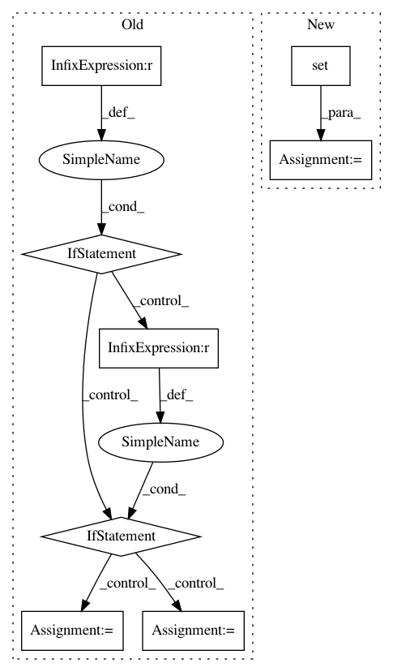

5eeca7d385178092790e08c1d5ad6cbcff35d3dc,nilmtk/metergroup.py,MeterGroup,load,#MeterGroup#,518
Before Change
except StopIteration:
continue
if chunk is None:
chunk = chunk_from_next_meter
timeframe = chunk.timeframe
elif len(chunk_from_next_meter) > 0:
n = len(chunk)
timeframe = timeframe.intersect(chunk_from_next_meter.timeframe)
chunk += chunk_from_next_meter
chunk = chunk.dropna()
if len(chunk) < n:
warn("Meters are not perfectly aligned.")
if chunk is None:
break
else:
chunk.timeframe = timeframe
After Change
// Update columns_to_average_counter
physical_quantities = chunk_from_next_meter.columns.get_level_values("physical_quantity")
columns_to_average = (set(PHYSICAL_QUANTITIES_TO_AVERAGE)
.intersection(physical_quantities))
counter_increment = pd.DataFrame(1, columns=columns_to_average,
index=chunk_from_next_meter.index)
columns_to_average_counter = columns_to_average_counter.add(
counter_increment, fill_value=0)
if chunk.empty:
break
In pattern: SUPERPATTERN
Frequency: 3
Non-data size: 8
Instances
Project Name: nilmtk/nilmtk
Commit Name: 5eeca7d385178092790e08c1d5ad6cbcff35d3dc
Time: 2014-12-11
Author: jack-list@xlk.org.uk
File Name: nilmtk/metergroup.py
Class Name: MeterGroup
Method Name: load
Project Name: Pinafore/qb
Commit Name: df1dd9b108f3cd7d5130e7f654ea099021c7a2b3
Time: 2017-05-24
Author: ski.rodriguez@gmail.com
File Name: qanta/guesser/experimental/elasticsearch_instance_of.py
Class Name: ElasticSearchIndex
Method Name: search
Project Name: kmike/pymorphy2
Commit Name: 07652d40f99f814d0497ac68ce8e636d96f3c6a7
Time: 2015-01-24
Author: kmike84@gmail.com
File Name: pymorphy2/opencorpora_dict/parse.py
Class Name:
Method Name: parse_opencorpora_xml